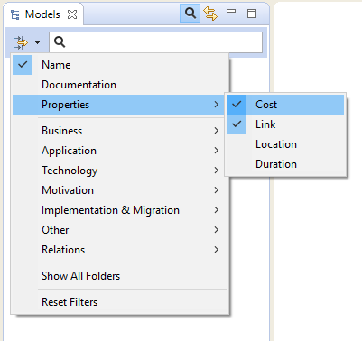

The number of objects in the Model Tree can grow quite considerably as you work on your model. Of course, you may wish to add sub-folders within the main folder structure to help organise these objects. However, finding a particular object in the tree may still prove to be difficult.
In order to search the Model Tree a Search Bar is included in Archi. This is accessed by clicking on the "Search" button on the toolbar of the Model Tree window. Clicking this button reveals the Search Bar:

The Search Bar revealed
As you type into the text field of the Search Bar the Model Tree updates to show only those objects that match the search criteria in the Search Bar. By default only the names of the objects are matched to the search string. You can also search on the "Documentation" field of the objects by ticking this in the "Filter Options" drop-down menu in the Search Bar:

Searching on both "Name" and "Documentation"
To clear the search text selection click on the icon to the right of the text. To clear the filters, deselect "Name" and/or "Documentation".
To filter certain types of ArchiMate concept you can select the types to include in the filter/search in the drop-down menu:

Filtering certain object types
To reset the object-type filter, select the "Reset Filters" menu item.
To filter User Properties of objects you can select the Property keys to include in the filter/search in the drop-down menu:
Filtering on User Properties
To filter Specializations of concepts you can select the Specializations to include in the filter/search in the drop-down menu in the same way as for Properties. This will reveal all concepts that match the Specializations selected.
As you refine your search the Model Tree will only show those objects that match your search/filter criteria (or none at all if no objects match). Thus, folders with no matching child objects are not shown. If however you wish to show these empty folders as you search for objects (you may wish to drag and drop objects to other folders, for example) then you can set this as an option in the filter menu by selecting "Show All Folders".
To close the Search Bar and reset the search filter press the "Search" button one more time.
It is also possible to find and replace objects in the Model Tree by name.

Find and Replace dialog